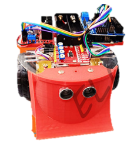
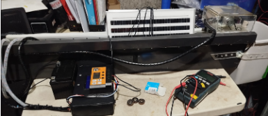
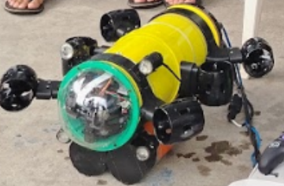
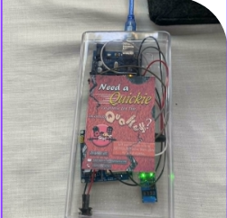
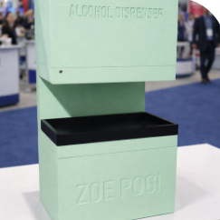
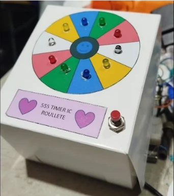
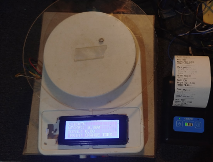
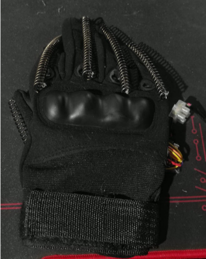
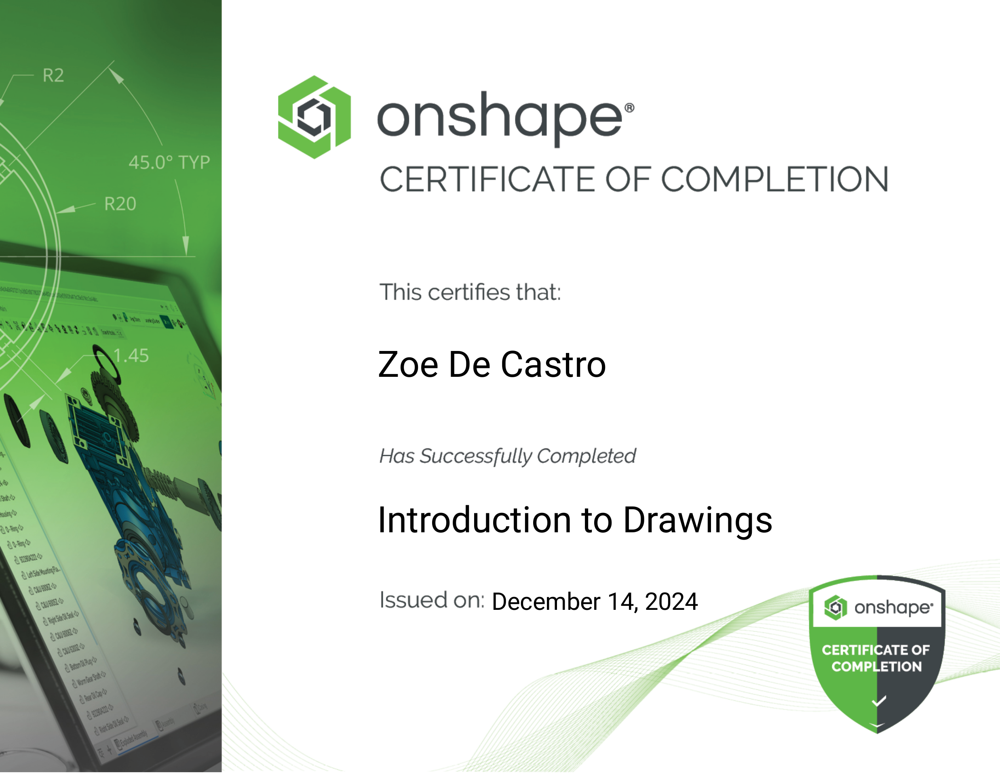
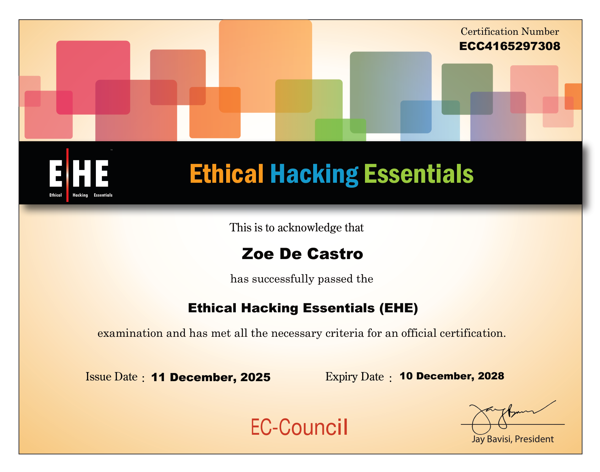

Technical Curiosity
Comfortable learning new tools, testing ideas, and improving through hands-on practice.
Computer Engineering Graduate
Embedded Systems | IoT | IT Support | Front-End Developer
A developing technology professional focused on practical systems, reliable support, and clear user-centered web experiences.

Profile
Computer Engineering graduate with practical experience in IT support, embedded systems development, hardware troubleshooting, and operating system deployment. Experienced in commissioned embedded systems projects, Windows installation, computer maintenance, and electronic circuit design. Passionate about developing innovative technical solutions, learning emerging technologies, and contributing to engineering teams through strong analytical and problem-solving skills.
Strengths
Comfortable learning new tools, testing ideas, and improving through hands-on practice.
Able to trace issues, compare possible causes, and work toward practical fixes.
Interested in how hardware, software, networks, and users interact in real environments.
Skills
Education
Completed coursework and practical projects related to computer systems, programming, electronics, embedded systems, and design.
Work
Projects

A robot designed for sumo robot competitions, where two robots push against each other and try to force the opponent outside the ring.

A cleaning device made to remove debris from roof gutters, such as leaves, plastic, and other blockages, so rainwater can flow properly.

Our capstone project, designed to monitor ocean and coral reef pH levels and help detect possible coral bleaching. The system supports the Bureau of Fisheries and Aquatic Resources (BFAR) by providing information that can help them take immediate action.

An alarm system that detects strong vibration, such as an earthquake, and sends a text message alert to the owner when movement is detected.

An electronic alcohol dispenser that uses an IR sensor to detect a hand within close range and automatically dispense alcohol without physical contact.

A roulette-style LED circuit using a 555 timer IC and a 74HC4017 IC. When the button is pressed, the circuit randomly lights an LED like a roulette selector.

A weighing scale system that can measure up to 10kg and display the weight on an LCD. It includes tare, next, and print buttons. The next button changes the selected product, such as pork, beef, or chicken, then calculates the price based on the weight and prints a receipt.

A rehabilitation glove with a heartbeat sensor for pulse monitoring and servo motors designed to assist stroke patients in recovering hand and finger movement.
Achievements


Contact
Available for entry-level technology roles, front-end developer, embedded systems in IoT, support work, and project collaboration.